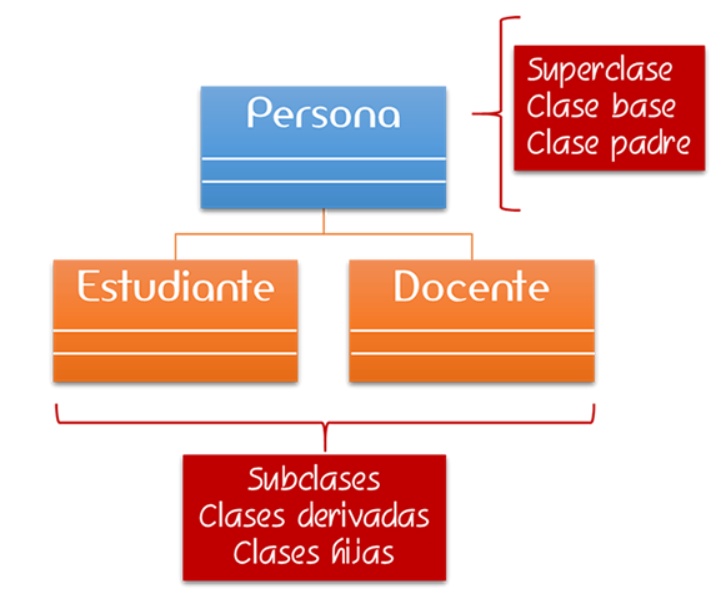

Herencia
🧭 Índice
- 🧠 ¿Qué es la herencia?
- 🌳 Jerarquía de clases en Java (
Object) - 🧩 “Es-un” vs “tiene-un” (cuándo usar herencia)
- 🧬 Herencia simple en Java
- 🧱 Sintaxis
extends - 🔐 Visibilidad en herencia (
private,protected,public) - 🏗️ Constructores y cadena de inicialización (
super()) - 🐾 Ejemplo completo: Animal → Dog
- 🔁 Sobrescritura de métodos (@Override)
- 🧷
thisvssuper(atributos y métodos) - 🧷
this()vssuper()(constructores) - 🧨 Miembros
staticy herencia - ⚠️ Errores típicos y reglas clave
🧠 1) ¿Qué es la herencia?
La herencia permite crear una clase nueva (hija / subclase) a partir de otra ya existente (padre / superclase) para:
- ♻️ Reutilizar atributos y métodos comunes
- 🧩 Especializar comportamientos (añadir o modificar cosas)
- 🏗️ Mantener una estructura jerárquica (más general → más específica)
📌 Ejemplo mental:
Un Ordenador tiene RAM, CPU, disco...
Una Tablet comparte muchas de esas características pero tiene otras propias.
Con herencia evitamos copiar/pegar todo (y luego sufrir para mantenerlo).
✅ Terminología equivalente: - 👨👧 Padre / hijo - 🧱 Clase base / clase derivada - ⬆️ Superclase / subclase

🌳 2) Jerarquía de clases en Java: Object
En Java, todas las clases heredan de java.lang.Object, directa o indirectamente.
Eso significa que todos los objetos tienen (como mínimo) métodos como:
- toString()
- equals(Object o)
- hashCode()
- getClass()
🔎 Idea importante: una jerarquía de clases se parece a un árbol invertido: - arriba → clases muy generales - abajo → clases más específicas
🧩 3) “Es-un” vs “tiene-un” (cuándo usar herencia)
✅ La herencia modela una relación “es-un” (is-a).
Perroes-unAnimalCochees-unVehículo
⚠️ Si la relación real es “tiene-un” (has-a), normalmente es mejor composición:
Cochetiene-unMotorPersonatiene-unaDirección
🧠 Regla práctica:
Si te suena raro decirlo en voz alta (“Un motor es un coche”), NO es herencia.
🧬 4) Herencia simple en Java
En Java, una clase solo puede extender de una clase:
✅ Herencia simple: 1 padre
❌ Herencia múltiple de clases: NO existe en Java (se evita ambigüedad)
📌 PERO: sí puedes implementar múltiples interfaces (más adelante en UD5).
🧱 5) Sintaxis extends
public class Hija extends Padre {
// miembros nuevos + constructores de Hija
}
✅ La clase hija hereda: - atributos (estado) - métodos (comportamiento)
⚠️ No se heredan los constructores (pero sí se pueden llamar con super(...)).
🚫 Si una clase es declarada como final, no se puede extender.
🔐 6) Visibilidad en herencia (private, protected, public)
| Modificador | ¿Se hereda? | ¿Se puede acceder desde la hija? |
|---|---|---|
public |
✅ | ✅ |
protected |
✅ | ✅ (ideal para herencia) |
| package (sin palabra) | ✅ | ✅ si está en el mismo paquete |
private |
✅ (forma parte del objeto) | ❌ (no accesible directamente) |
📌 Corrección importante (muy típica):
Los
privatesí forman parte del objeto (están “heredados” en el sentido de que existen en memoria), pero no puedes acceder a ellos desde la subclase.
Para eso se usan getters/setters oprotectedcuando proceda.
🏗️ 7) Constructores y cadena de inicialización (super())
Cuando creas un objeto hijo, primero se inicializa la parte padre.
✅ Por eso, en el constructor de la hija suele aparecer super(...):
public class Dog extends Animal {
public Dog(String name, int size, int weight) {
super(name, size, weight);
}
}
📌 Reglas:
- super(...) solo se usa dentro de un constructor.
- Si aparece, debe ser la primera sentencia del constructor.
- Si no escribes super(...), Java intenta insertar super() automáticamente.
- ⚠️ Si el padre no tiene constructor vacío, y tú no llamas a super(...), error de compilación.
🐾 8) Ejemplo completo: Animal → Dog
🐾 Clase padre Animal
public class Animal {
private String name;
private int size;
private int weight;
public Animal(String name, int size, int weight) {
this.name = name;
this.size = size;
this.weight = weight;
}
public void eat() {
System.out.println("Animal eat");
}
public void move() {
System.out.println("Animal move");
}
// getters/setters...
}
🐶 Clase hija Dog
public class Dog extends Animal {
private int eyes;
private int legs;
private int tail;
public Dog(String name, int size, int weight, int eyes, int legs, int tail) {
super(name, size, weight); // inicializa Animal
this.eyes = eyes; // inicializa Dog
this.legs = legs;
this.tail = tail;
}
private void chew() {
System.out.println("Dog chew");
}
@Override
public void eat() {
System.out.println("Dog eat");
chew();
super.eat(); // llama al eat() de Animal
}
}
🔁 9) Sobrescritura de métodos (@Override)
La sobrescritura (override) permite que la clase hija redefina un método del padre.
✅ Reglas básicas:
- Mismo nombre
- Misma lista de parámetros
- Mismo tipo de retorno (o compatible)
- No se puede reducir visibilidad (no pasar de public a protected, por ejemplo)
📌 @Override te protege de errores:
- si te equivocas en la firma → compila mal (y es lo que quieres)
🧷 10) this vs super (atributos y métodos)
🪞 this
this apunta al objeto actual (la instancia actual).
Se usa mucho para: - diferenciar atributo vs parámetro - llamar a métodos del propio objeto
public class Coche {
private int ruedas;
public Coche(int ruedas) {
this.ruedas = ruedas;
}
public void setRuedas(int ruedas) {
this.ruedas = ruedas;
}
}
🧭 super
super apunta a la parte padre del objeto.
Se usa para:
- acceder a un método del padre cuando lo has sobrescrito
- acceder a un atributo del padre si está oculto (no recomendado ocultar campos)
- llamar al constructor del padre (super(...))
@Override
public void eat() {
System.out.println("Dog eat");
super.eat(); // ejecuta Animal.eat()
}
⚠️ Muy importante:
Si en
Dog.eat()llamas aeat()sinsuper, estarías llamando al mismo método, no al del padre.
🧷 11) this() vs super() (constructores)
🔁 this()
Llama a otro constructor dentro de la misma clase.
public Coche() {
this(4); // llama al constructor Coche(int)
}
public Coche(int ruedas) {
this.ruedas = ruedas;
}
⬆️ super()
Llama a un constructor de la clase padre.
public class Transporte {
public Transporte(int puertas, int precio) { /*...*/ }
}
public class Coche extends Transporte {
public Coche(int puertas, int precio) {
super(puertas, precio);
}
}
📌 Regla clave:
- Un constructor puede tener this() o super(), pero nunca ambos.
- Y el que haya, debe ser la primera sentencia.
🧨 12) Miembros static y herencia
En Java, los miembros static no funcionan “como” la herencia normal porque pertenecen a la clase, no a la instancia.
🧱 ¿Se heredan los static?
- ✅ Existen en la jerarquía y desde una subclase puedes referenciarlos.
- 📌 Pero siguen perteneciendo a la clase donde fueron declarados (normalmente la superclase).
- ✅ Buen hábito: acceder siempre con el nombre de la clase que lo declara (
Padre.CONSTANTE) para evitar confusión.
🎭 Métodos static: NO hay @Override (hay hiding)
Los métodos static no se sobrescriben (no override).
Si declaras uno con la misma firma en la subclase, lo que ocurre es ocultación (hiding), y no hay polimorfismo:
class Padre {
static void saludar() { System.out.println("Padre"); }
}
class Hija extends Padre {
static void saludar() { System.out.println("Hija"); } // oculta, NO override
}
public class Main {
public static void main(String[] args) {
Padre.saludar(); // Padre
Hija.saludar(); // Hija
Padre p = new Hija();
p.saludar(); // Padre (se decide por el TIPO de referencia)
}
}
🧠 Idea clave:
- Con métodos de instancia, manda el objeto real (polimorfismo).
- Con métodos static, manda el tipo de la referencia.
🫥 Atributos static: también se pueden “ocultar” (mala idea)
Con campos static pasa lo mismo: se resuelven por tipo de referencia.
class Padre { static int x = 1; }
class Hija extends Padre { static int x = 2; }
public class Main {
public static void main(String[] args) {
System.out.println(Padre.x); // 1
System.out.println(Hija.x); // 2
Padre p = new Hija();
System.out.println(p.x); // 1 (por tipo de referencia)
}
}
✅ Recomendación:
Evita redeclarar campos
staticcon el mismo nombre en la subclase.
🧾 Resumen rápido (para memorizar)
- ✅
staticse puede acceder desde la subclase, pero pertenece a la clase. - ❌
staticNO se overridea → se oculta (hiding). - 🧠 En
Padre p = new Hija(), unstaticse resuelve por tipoPadre, no por el objeto.
⚠️ 13) Errores típicos y reglas clave
✅ Checklist rápido:
- 🧱 No se heredan constructores (pero sí se llama al del padre con super)
- 🔒 private no es accesible desde la hija (usa getters/setters o protected)
- 🧾 Usa @Override siempre que sobrescribas
- 🧯 Los métodos static no se sobrescriben (se ocultan), y no hay polimorfismo ahí
- 🧠 Herencia = “es-un”, si es “tiene-un” → composición